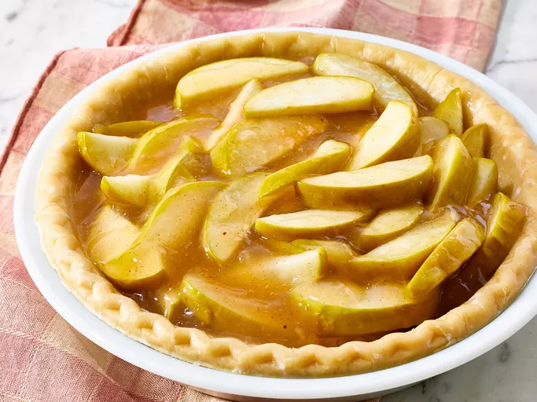

Apple Pie Recipe

How to Make Apple Pie
Apple Pie is a classic American dessert that is made with a sweet, flaky crust filled with a mixture of apples, sugar, cinnamon, and nutmeg. It is typically baked in the oven until the apples are tender and the crust is golden brown.
Ingredients
- Pie Crust
- Apples
- Sugar
- Cinnamon
- Nutmeg
Steps
- Preheat oven to 350 degrees F (175 degrees C).
- In a large skillet over medium-high heat, brown beef and season with salt and pepper; drain.
- Then, add sugar, cinnamon, and nutmeg to the apples and mix well.
- Next, place the apples in the pie crust.
- Then, add the sugar mixture to the apples.
- Finally, bake in the preheated oven for 45 minutes. Remove foil, and bake an additional 25 minutes. Cool for 15 minutes before serving.